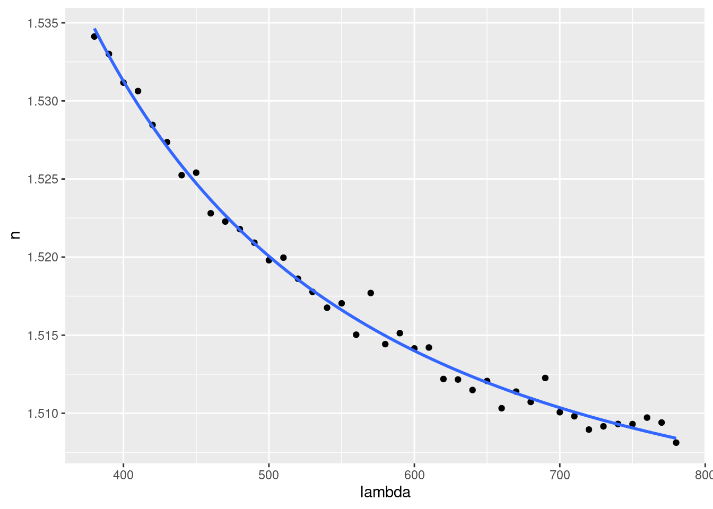

2.8 Gráfico del ajuste
Al comienzo del problema representamos la nube de puntos de nuestras observaciones con la función geom_point(). Añadimos ahora el gráfico del ajuste con la función geom_smooth():
ggplot(
data = refraction,
mapping = aes(x = lambda, y = n)
) +
geom_point() +
geom_smooth(
method = "lm",
formula = y ~ I(1 / x^2) + I(1 / x^4),
se = FALSE
)
En los argumentos de geom_smooth() hemos escrito method = "lm" para indicar que el ajuste se realiza con la función lm().
Notar que al especificar la fórmula del modelo en el argumento formula no se utilizan los nombres lambda y n de las variables –como se hizo en la función lm()– sino los nombres x e y de las estéticas asociadas.
El argumento se = FALSE inhibe representar los intervalos de confianza (que estudiaremos en el último tema del curso).